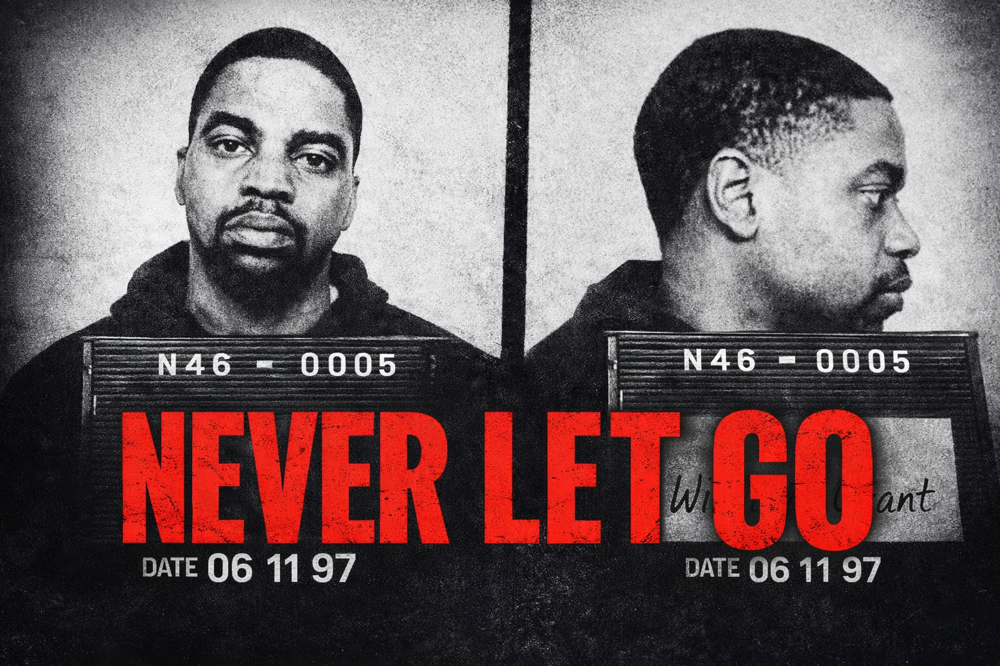
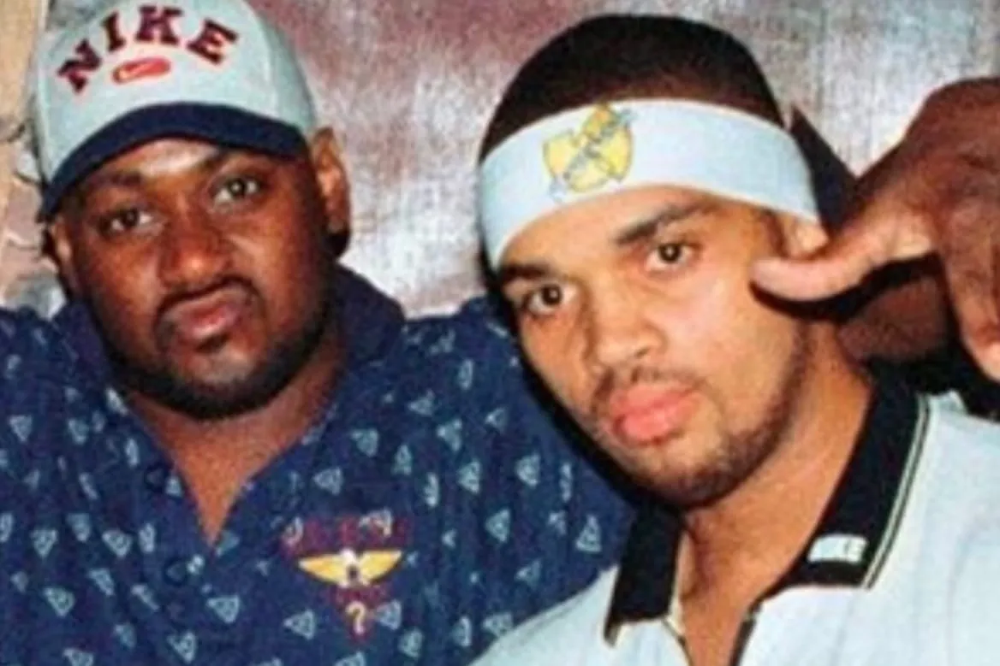

Never Let Go tells the extraordinary true story of Grant Williams, a man who spent 23 years in prison for a murder he did not commit — and the childhood bestfriend who never stopped believing in him: Ghostface Killah of the Wu-Tang Clan.

Now free, Grant reunites with Ghost, and the two set out on a deeply personal mission: to turn Grant's life story into an album.
At once an intimate portrait of friendship and a searing exploration of justice, Never Let Go is the story of two men using music to confront the past, reclaim the truth, and tell a story that was silenced for decades — on their own terms.
Charlie Buhler
Grant Williams
Feature Length